Už dlouho jsem tu neměla tak nadupaný čtenářský příspěvek - tohle jaro bylo bohaté na literaturu všech možných žánrů od žurnalistických prací přes naučné publikace až po klasickou beletrii a dokonce tu máme i jeden horor :-). Pokud jste si ke mně přišli pro nějaký ten knižní tip na ptázdniny, myslím, že dnes si určitě něco vyberete…
Jessica Bruder - Země nomádů
První Absyntovka, u které se přiznám, že mě úplně nechytla. Možná, kdyby byla kniha o polovinu kratší a kdyby tam těch postav nebylo tolik. Asi mi úplně nesednul ani vypravěčský styl autorky, díky němuž nebyla Země nomádů úplně čtivá. Pokud ve vás slovo nomád evokuje především mladého člověka pracujícího odkudkoliv, možná budete překvapení, jak takový nomádský život také může vypadat. Je to život lidí, kteří své domovy opustili víceméně nedobrovolně v důsledku tíživé ekonomické situace a nevstřícného sociálního a zdravotního systému ve Spojených státech a jsou odkázáni na život v dodávce či karavanu. Na živobytí si často vydělávají coby správci v národních parcích nebo brigádami ve skladech firem jako Amazon, které neváhají své brigádníky (mnohdy seniorního věku) sedřít z kůže. Téma novodobých nomádů by určitě nemělo zapadnout a je jen obdivuhodné, kolik času a energie mu autorka musela věnovat, nicméně zpracování mi v tomto případě úplně nesedlo.
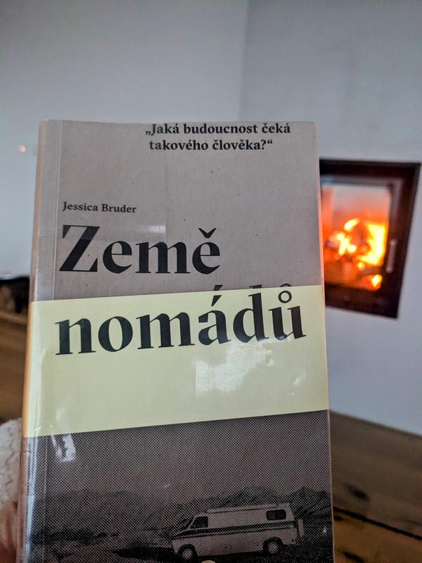
Eva Střihavková - Dýchej za mě
Knížka, po které by mě samotnou určitě nenapadlo sáhnout, ale našla si ke mne cestu sama skrze umělecky založenou kolegyni, která mi ji zapůjčila O:-) Příběh se totiž točí kolem reálné postavy – nadané české malířky Augusty Nekolové, jejíž talent byl bohužel zastíněn historickými kulisami první světové války. Vypravěčkou příběhu je Gustina mladší a o poznání pragmatičtější sestra Milada, s níž ji pojí silné pouto. Přestože román je velice čtivě a kvalitně napsaný, přibližuje život běžných lidí za časů první světové války, což je téma, které se v aktuální české próze rozhodně moc často nevyskytuje a navíc se soustředí na polozapomenutou, ale o to talentovanější malířku, která i přes nepřízeň doby, v níž žila, měla v sobě tolik odhodlání prosadit se v oboru, v němž nebylo pro ženy dost místa, docela mě překvapilo, jak vysoké hodnocení kniha v žebříčcích na internetu má. Přece jen mi v románu chyběla jakási hloubka. Po celou dobu jsem ale oběma sestrám moc fandila, hlavně vypravěčce Miladě, u které jsem měla chvílemi až zlost, jak si sama šlape po štěstí, a doufala jsem, že aspoň u jedné z nich se bude konat trochu happy end. Jestli jsem se ho dočkala ale samozřejmě nehodlám prozrazovat ;-)
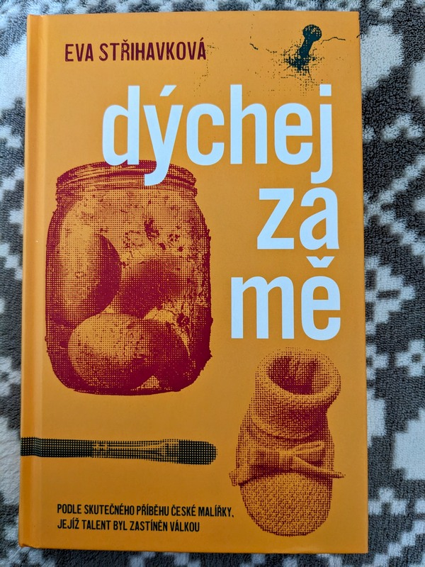
Dagmar Krišová a Marcela Poláčková - Děti to chtěj vědět taky
Tak trochu v duchu hesla „Kdo je připraven, nebývá překvapen!“ :-D jsem loni napsala Ježíškovi o tuto publikaci, která se v jednu dobu prohnala sociálními sítěmi. Zdála se mi fajn rozličností témat i podanou formou, jen ty modelové rozhovory rodič vs. dítě mi tedy přišly strašně křečovité :-D Ale jinak myslím, že pro někoho, kdo tápe, jakým způsobem dětem různého věku nejlépe předat informace o všelijakých ožehavých (nejen) sexuálních tématech, to určitě není špatný odrazový můstek.
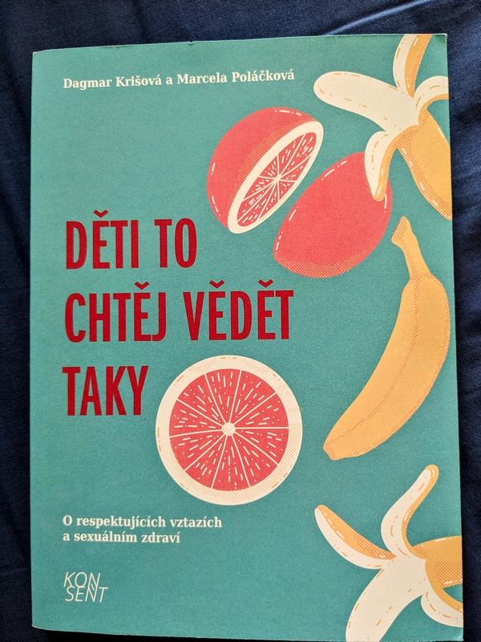
Michal Petrov - Retro (Co bylo a nebylo za reálného socialismu)
Jakožto věrný divák magazínu Retro na České televizi jsem tuto publikaci před lety nadělila našim pod stromeček. V knize je víc obrázků než textu, což nostalgickým pamětníkům určitě nevadí, a mladší generace se i tak nějaké zajímavé informace z „běžného“ života za socialismu dozví.
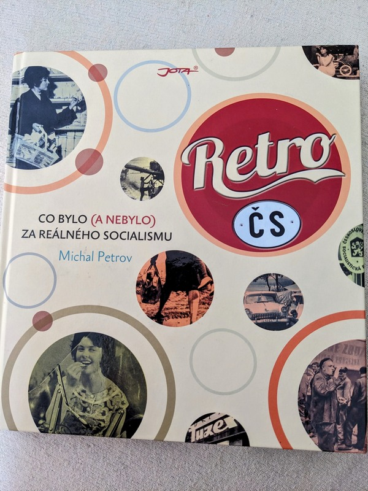
Saul Bellow - Seize the Day
Americký židovský spisovatel Saul Below, byť je nositelem Nobelovy ceny za literaturu, v našich končinách podle mě není nijak zvlášť známý. Jeho kořeny sahají do Ruska, odkud jeho rodiče krátce před jeho narozením emigrovali do USA. Vliv ruské literatury a především ruských románů, které se zálibou četl, se propsal i do jeho díla. K útlé novele Seize the day mám takový rozporuplný vztah. Mám ji v knihovničce už pekelně dlouho (od naší poslední návštěvy New Yorku), ale docela dlouho mi trvalo, než jsem se k ní konečně propracovala a vlastně mě od začátku nějak moc nezaujala (možná kvůli té komplikované angličtině), takže i začíst se do ní mi zabralo nějaký čas. Jinými slovy, než jsem se trochu zorientovala v postavách a ději, najednou už byl konec… Hlavním hrdinou příběhu je neúspěšný muž, jemuž se rozpadlo manželství, je ve finanční krizi a cítí, že na jeho životním pádu se krom jeho vlastní neobratnosti podílí i prostředí dravého New Yorku. Právě onen kontrast rozkolísanosti a přílišného přemítání stojící proti mýtu úspěchu a amerického snu jsou charakteristické pro autorovy literární postavy. Musím říct, že bych si novelu ráda přečetla ještě jednou v českém překladu – obávám se, že mi tím čtením v angličtině dost myšlenek uteklo.
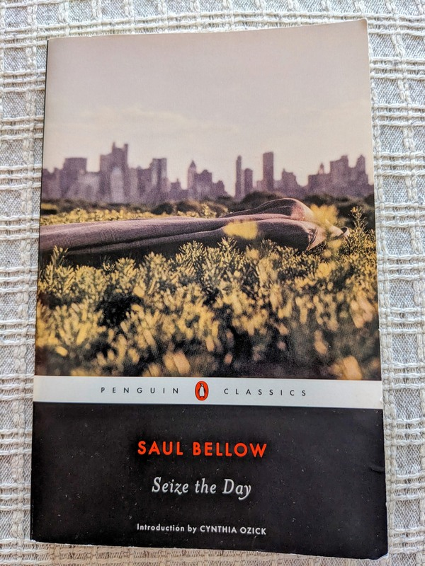
Veronika Ježková, Nikol Francová - Kvítka v bytě
Po řadě mých pěstitelských neúspěchu konečně kniha, která vás polopatě, prakticky a k tomu ještě přátelskou a zábavnou formou zasvětí do všech tajů pěstování pokojových rostlin. Od té doby, co ji mám přečtenou, mi má monstera po letech trucování konečně vyplodila dva nové listy :-D! Pochopíte mnohé zákonitosti světa rostlin, naučíte se, co která kytka vyžaduje a čemu se u vás doma nikdy dařit nebude, ale také v jakém květináči je kytkám dobře a proč, jak hnojit, bojovat proti škůdcům a mnoho mnoho dalšího. A bonus navíc - Kvítka v bytě - jsou krásná i po vizuální stránce. A ta vaše zelená budou s touto praktickou příručkou určitě brzy taky :-)
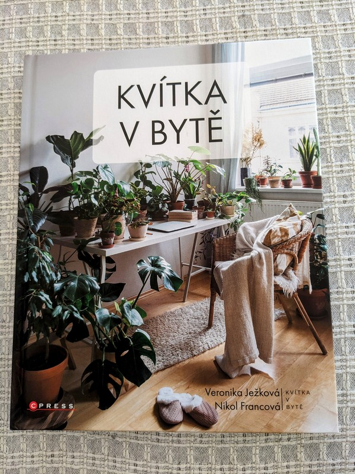
Ferdinand Leffler - Žijte ve své zahradě
A aby tady té zeleně nebylo málo, vrhla jsem se hned po té interiérové zeleni na naši…ehm, zahradu. Jednoho dne z ní tedy určitě krásná zahrada bude. Alespoň na tom intenzivně pracujeme díky Ferdinandově stejnojmenném kurzu Žijte ve své zahradě. Tato kniha kurz hezky doplňuje, ale přijde mi, že se z ní žádné informace navíc, které by v kurzu nezazněly, nedozvíte. Je to zkrátka jen hezká publikace plná inspirujících obrázků, ale kurz jako takový se mi zdá určitě jako lepší investice.
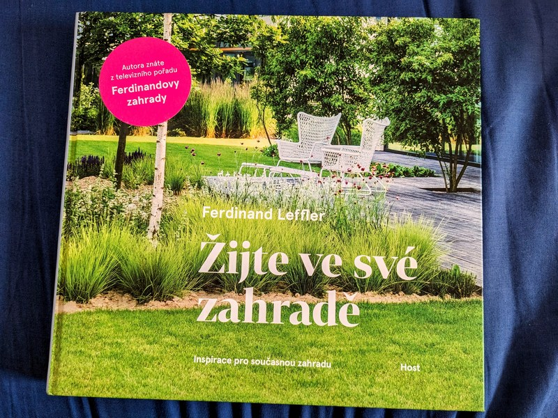
Viktorie Hanišová - Dlouhá trať
Po přečtení Houbařky jsem měla jasno v tom, že si od Viktorie Hanišové rozhodně chci ještě něco přečíst a v knihovně jsem narazila na její soubor krátkých povídek, které spojuje téma smrti, respektive sebevraždy. Nezní to zrovna jako veselé čtení a oddechovku na dovolenou od toho nečekejte, většina povídek se nečte úplně lehce. I na nevelké ploše povídky ale autorka umí rozehrát příběh, který se vás hluboce dotkne. Některé povídky mají až hororový nádech (Díra), všechny mají každopádně znepokojivou, emoce jitřící atmosféru.
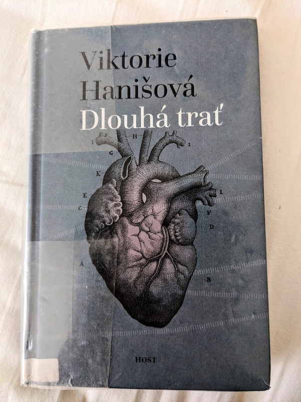
Stephen King - Gerald’s Game
S tímto Kingovým hororem jsem si dala pěkně na čas. Byl to dárek, ehm, k osmnáctinám :-D… Asi jsem si na tu angličtinu moc netroufala, ale musím nakonec zpětně říct, že King se čte i v angličtině velmi dobře. Samozřejmě občas jsem si musela nějaká slovíčka vyhledat, ale asi bych i bez nich pochopila tu základní message příběhu. Příběhu, který je místy opravdu nervy drásající, zejména v pasážích, kde se hlavní hrdinka Jessie vrací do temné minulosti svého dětství a vzpomíná na traumatické události jednoho letního večera… Někteří knize vyčítají její rozvláčnost a pravdou asi je, že by román mohl být o něco kratší a některé pasáže by se daly klidně vypustit. I tak mě ale Geraldova hra velmi bavila a udržela v napětí až do posledních stránek.
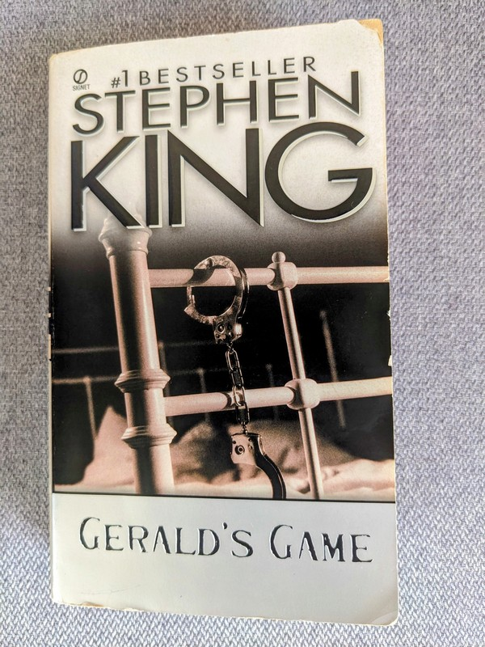
Caroline Criado Perez - Neviditelné ženy
Tato kniha, byť z pera britské autorky a zohledňující jiný než český kontext, krásně navazuje na mnou nedávno adorovanou publikaci Proč jsme tak naštvané? A bohužel musím konstatovat, že vás (pokud jste tedy žena) naštve ještě víc. Ve výčtu oblastí, kde jsou protěžování nebo zvýhodňování muži, jde totiž ještě mnohem dál. Na mušku si bere farmaceutický průmysl, kde jsou léky určené primárně pro ženy z neznámých důvodů testovány na mužích, což zkresluje jejich účinnost. Ochranné pracovní pomůcky, automobily, mobilní telefony – to všechno je koncipováno na průměrné mužské tělo a můžeme se jen dál bezmocně ptát PROČ. Všechen životní optimismus, že jsme na tom v dnešní době jako ženy už vlastně docela dobře a mnoho věcí se pohnulo kupředu, z vás se čtením Neviditelných žen rychle vyprchá. Nemusíte se přitom bát, že by šlo o nějaký naštvaný feministický pamflet – každé tvrzení je podloženo fakty, analýzami a daty napříč celým světem.
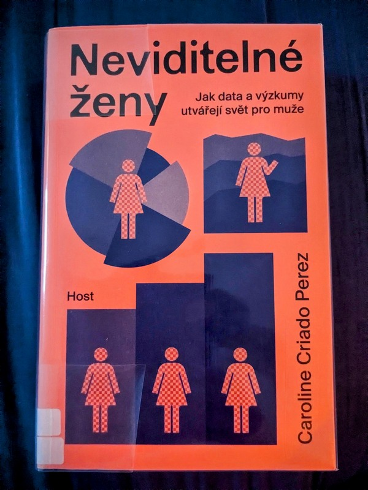
Petra Dvořáková - Chirurg
Tahle na první pohled oddechovka mé oblíbené české autorky Petry Dvořákové, která ale vlastně vůbec nepřináší oddechové téma, mě velmi chytla. Drsně a prý velmi realisticky vykreslené (autorka coby vystudovaná zdravotní sestra prý čerpala z vlastních zkušeností) prostředí nemocnice (což člověku vezme zbývající iluze o českém zdravotnictví 8-) se stává kulisami pro osobní drama “ztroskotaného” chirurga, kterého vlastní profesní selhání a koketování s alkoholem připravilo o prestižní místo v pražské nemocnici, finanční stabilitu i poklidný rodinný život. Odvelen do zapadlého kraje, kde nebude příliš na očích, se pokouší ze všeho toho životního bahna vyhrabat, aby čtenář mohl pozorovat, jak místy zase zapadá hloub a hloub… Přestože milý pan chirurg není zrovna příkladem těch nejlepších ctností, musím říct, že si jistým způsobem získal mé sympatie a dost jsem mu při čtení fandila, aby se mu podařilo poskládat svůj život zase dohromady.
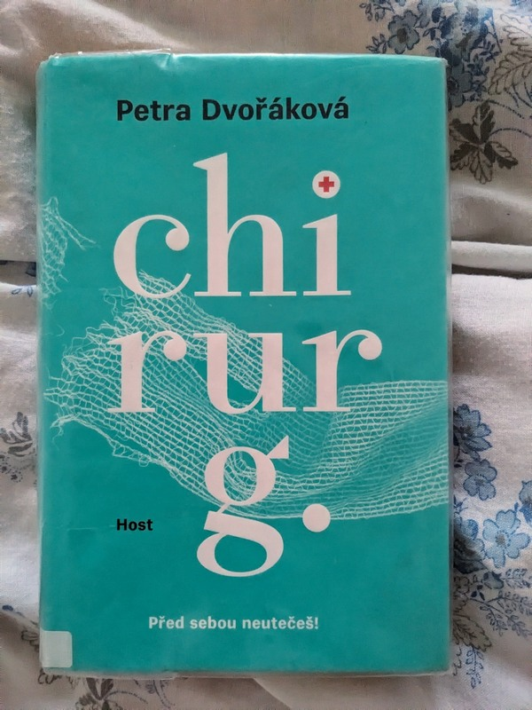
Ferdinand Leffler - Zelené pokoje
Druhý díl Ferdinandovy zahradní bible mi přišel o poznání praktičtější a užitečnější než ten první, který je za mne spíše předraženou knihou plnou krásných obrázků. V Zelených pokojích už můžete načerpat opravdu hodně konkrétních informací a velkým bonusem knihy je pro mne i závěrečná část s prakticky rozepsanou ukázkou několika realizací trvalkových záhonů, roztříděných podle toho, zda chcete sázet spíše na slunném nebo stinném stanovišti.
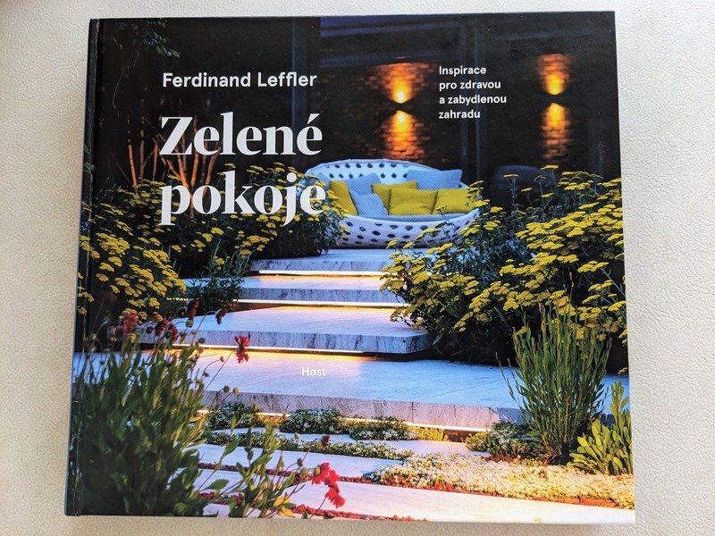